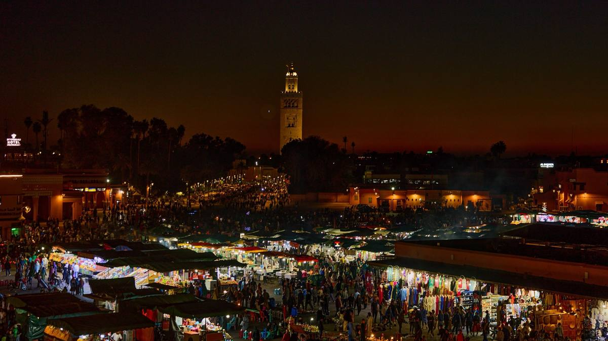
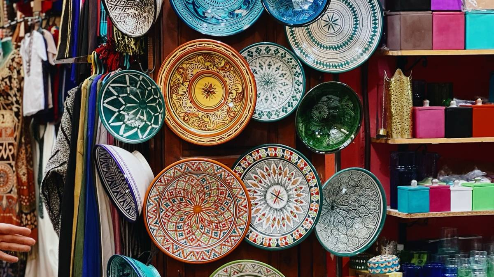
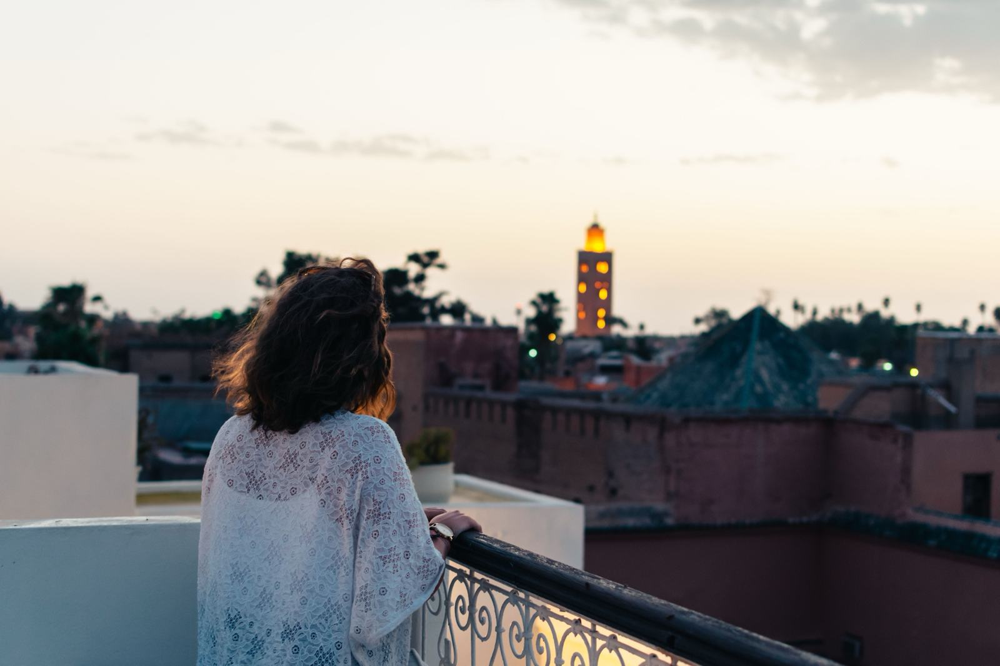
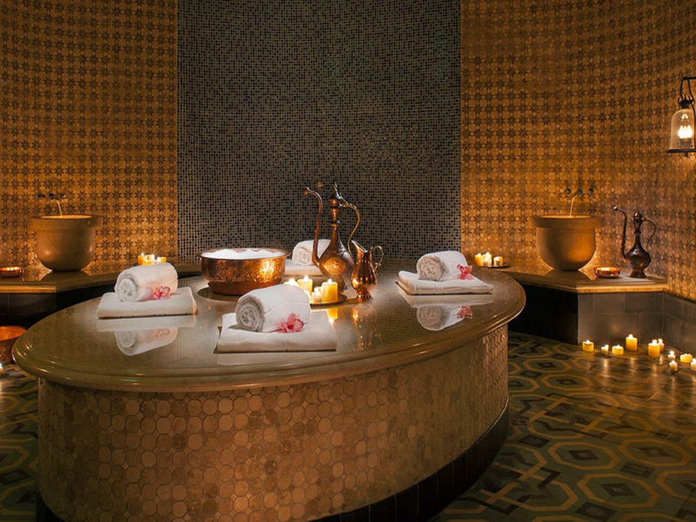
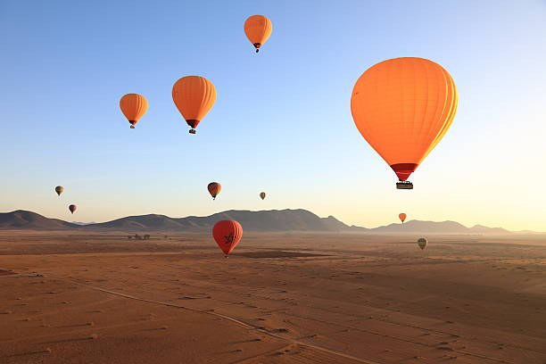

Three days is the ideal amount of time for Marrakech. It gives you one day for the historic medina, one day for palaces, gardens and the modern city, and one day to escape to the Atlas Mountains, the Agafay desert or the coast. Here is our complete day-by-day plan, written by local guides, with what to see, where to eat, how much to budget and the mistakes to avoid.

Your 3 days at a glance
| Day | Morning | Afternoon | Evening |
|---|---|---|---|
| Day 1 | Koutoubia, souks | Ben Youssef Madrasa, Le Jardin Secret | Jemaa el-Fnaa |
| Day 2 | Majorelle Garden | Bahia Palace, Saadian Tombs, Mellah | Rooftop dinner, hammam |
| Day 3 | Day trip: Atlas Mountains, Ourika, Agafay desert or Essaouira | ||
Day 1: the heart of the medina
Morning: Koutoubia and the souks
Start at the Koutoubia Mosque, the symbol of Marrakech. Its 12th-century minaret, about 77 metres high, was the model for the Giralda in Seville. Non-Muslims cannot enter the mosque, but the gardens around it are lovely in the morning light.
Then walk into the souks, north of Jemaa el-Fnaa. Each street traditionally had its own trade: Souk Semmarine for textiles, the dyers' souk with skeins of wool drying in the sun, the leather and lantern makers, the spice and herbalist stalls. Go early, before 11:00, when it is calmer and the craftsmen are working.

Afternoon: Ben Youssef Madrasa and Le Jardin Secret
The Ben Youssef Madrasa is one of the most beautiful buildings in Morocco: a 16th-century Koranic school with a courtyard of carved cedar, stucco and zellige tiles. Nearby, Le Jardin Secret is a restored riad garden, a peaceful break from the busy alleys, with a tower that offers a view over the rooftops.
Evening: Jemaa el-Fnaa
At sunset, the square changes completely. Food stalls are set up, smoke rises from the grills, and musicians, storytellers and Gnawa groups gather crowds. Watch the show from a café terrace first, then go down to eat at the stalls: harira soup, grilled meat, snails and fresh orange juice.

Tip
In the square, people with monkeys, snakes or henna will ask for money if you take a photo or accept a "gift". Agree on the price before, or simply say "la, shukran" (no, thank you) and keep walking. We also recommend not paying for photos with chained monkeys.
Day 2: palaces, gardens and rooftops
Morning: Majorelle Garden
Go straight at opening time to the Majorelle Garden, created by the painter Jacques Majorelle and later restored by Yves Saint Laurent and Pierre Bergé. The cobalt blue villa, cactuses and bamboo make it one of the most photographed places in Morocco. Next door, the Yves Saint Laurent Museum is worth a visit for fashion lovers. Buy your tickets online in advance: queues can be long and entry is by time slot.
Afternoon: Bahia Palace, Saadian Tombs and the Mellah
The Bahia Palace, built in the 19th century, has painted ceilings, gardens and courtyards that show the luxury of the Moroccan court. A few minutes away, the Saadian Tombs hold the mausoleums of the Saadian dynasty, with exceptional marble and stucco work. Finish with a walk through the Mellah, the old Jewish quarter, with its spice market and the Lazama synagogue.

Evening: rooftop dinner and a hammam
End the day on a rooftop terrace for sunset, then enjoy dinner in a riad restaurant. If you have energy left, a hammam is the perfect way to relax after two days of walking. Read our complete hammam guide to choose between a local and a spa hammam.

Day 3: a day trip from Marrakech
On your third day, leave the city. The best options:
- Atlas Mountains and the Ourika Valley (1 h): Berber villages, waterfalls and lunch by the river. See our Ourika Valley day trip.
- Agafay desert (45 min): a rocky desert with views of the Atlas, quad bikes, camel rides and dinner under the stars. Not the Sahara, but a good taste of the desert if you do not have time.
- Essaouira (about 3 h): a blue and white fishing port on the Atlantic, with ramparts and fresh fish. See our Essaouira day trip.
- Ouzoud Waterfalls (about 2 h 30): the highest waterfalls in North Africa, with Barbary macaques. See our Ouzoud day trip.
- Hot air balloon at sunrise: a flight over the palm groves and villages, followed by a Berber breakfast.

Want to see the real Sahara?
The great dunes of Merzouga are about 9 hours' drive from Marrakech, too far for a day trip. If you have 3 extra days, combine Marrakech with a 3-day desert tour, or read Marrakech to Merzouga.
Where to stay in Marrakech
- In the medina, in a riad: the most authentic option. A traditional house built around a courtyard, often with a pool or fountain and a rooftop. Ideal for walking everywhere.
- Guéliz and Hivernage: the modern city, with hotels, restaurants and shopping. Quieter and easier by car, but you need a taxi to reach the medina.
- The Palmeraie: luxury resorts in the palm groves, perfect for relaxing by the pool, but 20 minutes from the centre.
What to eat in Marrakech
- Tanjia: the speciality of Marrakech, beef slow-cooked for hours in a clay jar in the ashes of a hammam fire.
- Méchoui: slow-roasted lamb, sold by weight in the small stalls near Jemaa el-Fnaa.
- Tagine and couscous: couscous is traditionally eaten on Friday.
- Mint tea and Moroccan pastries.
Discover more dishes in our Moroccan food guide.
Practical tips
- Getting around: the medina is best on foot. For longer distances, take a beige petit taxi and agree on the price or ask for the meter.
- Fake guides: if someone tells you a street is "closed" or offers to show you the way, politely refuse. Use a map or an official guide.
- Bargaining: it is normal in the souks. Start at around half the asking price and stay friendly. Read bargaining and tipping in Morocco.
- Dress code: light, comfortable clothes covering shoulders and knees are best. See what to wear in Morocco.
- Best time: spring (March to May) and autumn (September to November). Summer is very hot, often over 38 °C.
Frequently asked questions
Are 3 days enough for Marrakech?
Yes. Three days lets you see the main monuments of the medina and the gardens without rushing, and take one day trip. With only 2 days, skip the day trip; with 4 days or more, add the Sahara.
Is Marrakech safe for tourists?
Yes, Marrakech is a safe city for visitors. The main issues are pushy sellers and fake guides. Use common sense, watch your belongings in crowds and read our guide Is Morocco safe?
Can I do the Sahara as a day trip from Marrakech?
Not the real Sahara: Merzouga is about 9 hours away. The Agafay desert, 45 minutes from Marrakech, is a good alternative for one day. For the great dunes, you need at least 3 days.
Do I need a guide in the medina?
It is not mandatory, but an official guide for half a day helps you understand the history, find the best craftsmen and avoid getting lost. On our private tours, the city visit is included.
Keep reading: 7 days in Morocco · Best places to visit in Morocco · Tours from Marrakech